A comprehensive guide to managing your personal finances
with the Finance Manager mobile application
Personal Finance Manager is a mobile application designed to help you manage your personal finances efficiently. The app provides a comprehensive suite of tools for tracking bank account balances, recording deposits and withdrawals, managing credit card bills, and keeping track of pending payments — all from your smartphone.
The app is available as an Android APK. To install it on your device:
When you first open the app, you'll need to create an account. The sign-up process has three simple steps.
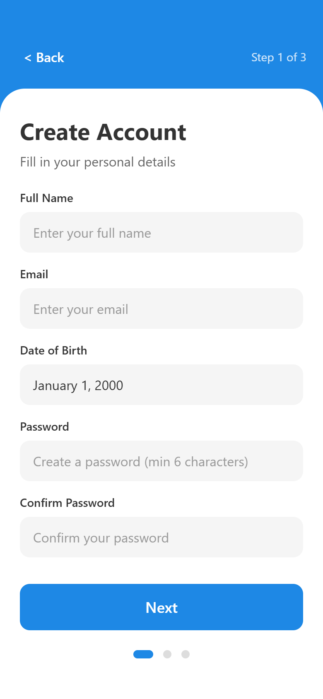
You can always add more bank accounts later from the Profile screen. Add at least one account during sign-up to start tracking your finances right away.
The Bill Generation Day is when your credit card statement is generated each month. The Last Payment Day is the deadline to pay your bill to avoid late fees.
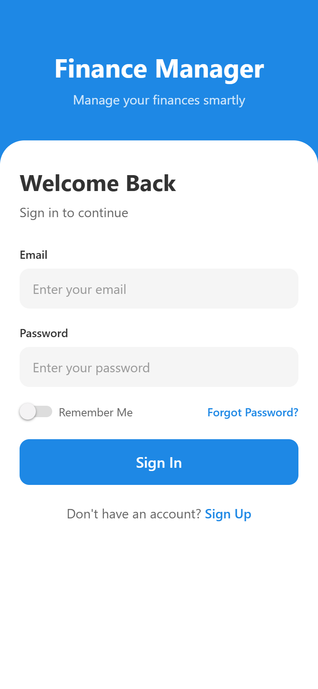
To sign in to your account:
Enable "Remember Me" to skip entering your credentials each time you open the app. Your email and password will be securely saved on your device.
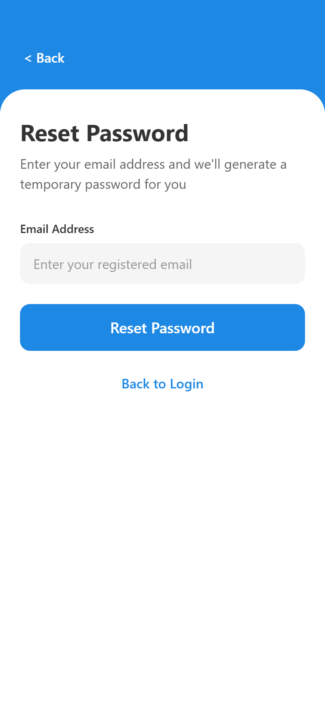
If you've forgotten your password:
The temporary password is shown only once. Make sure to note it down before navigating away from the screen.
The Dashboard is your financial command center. It gives you an at-a-glance view of your total balance, recent activity, account balances, and any pending items that need your attention.
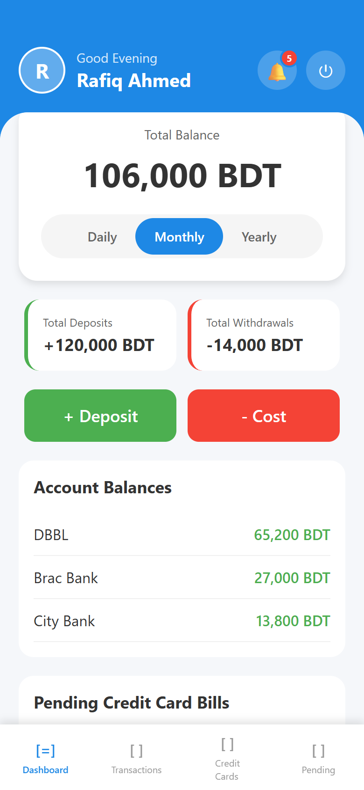
The Dashboard is organized into the following sections:
| Section | Description |
|---|---|
| Header | Shows your profile avatar, greeting (changes based on time of day), notification bell, and logout arrow button. |
| Total Balance | Displays the combined balance across all your bank accounts in BDT. |
| Period Filter | Switch between Daily, Monthly, and Yearly views for deposit/withdrawal summaries. |
| Summary Cards | Vertically stacked rows showing total deposits (green), total withdrawals (red), and — if you have credit cards — credit card costs (orange) for the selected period. Each row displays an icon badge on the left, the label, and the amount on the right. |
| Quick Actions | Green "+ Deposit" and red "- Cost" buttons for quick transactions. |
| Account Balances | Lists each bank account with its current balance. |
| Pending Bills | Shows pending or overdue credit card bills (scroll down to view). |
| Pending Payments | Shows upcoming payments and overdue items (scroll down to view). |
The total balance at the top is automatically calculated from all your bank account transactions. Use the filter buttons to view your income and expenses for different time periods:
The summary cards are displayed as vertically stacked rows below the period filter. Each row has a colored left border, an icon badge, the category label on the left, and the amount (in BDT) on the right. This layout ensures amounts are always fully visible, even for large numbers.
| Card | Icon | Color | What It Includes |
|---|---|---|---|
| Total Deposits | + | Green | All incoming money (salary, transfers, etc.). |
| Total Withdrawals | - | Red | Bank account expenses, credit card bill payments, and other outgoing money from bank accounts. |
| Credit Card Costs | C | Orange | Expenses charged to a credit card (only visible if you have credit cards enabled). |
Credit card costs are tracked separately from withdrawals. When you pay off a credit card bill from a bank account, that payment appears under Total Withdrawals. When you charge an expense to a credit card, it appears under Credit Card Costs. This separation helps you understand how much you're spending on credit versus cash.
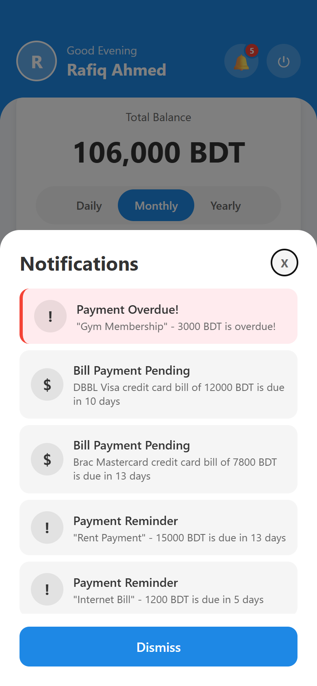
The notification bell in the top-right corner shows a red badge with the count of active alerts. Tap it to open the Notifications panel. Notifications are automatically generated for:
Check your notifications regularly to stay on top of upcoming bills and avoid late fees. Notifications are sorted by urgency, with the most critical ones at the top.
The two large action buttons on the dashboard let you quickly record transactions:
Pull down on the dashboard to refresh all data and recalculate balances.
Record incoming money (salary, transfers, etc.) through the Deposit screen.
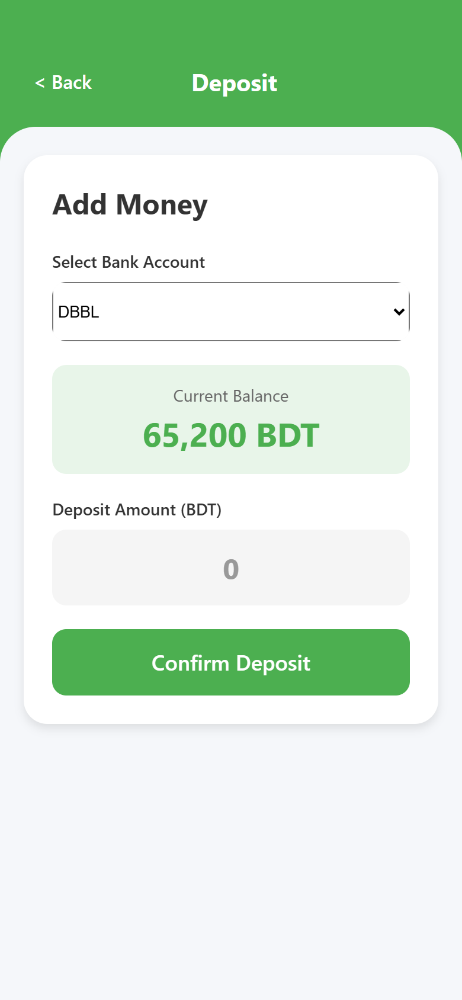
The deposit amount must be a valid number greater than zero. The new balance is previewed in real-time as you type.
Track your spending by recording expenses through the Cost / Withdrawal screen.
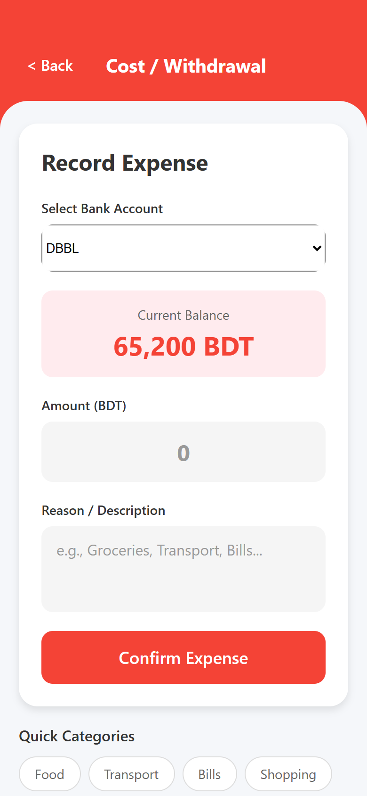
You can now record expenses made on a credit card directly from the Cost screen. This is separate from credit card bill payments.
During CC Bill Payment mode (when the "CC Bill Payment" quick category is selected), credit cards are hidden from the account picker. You pay bills from a bank account, not from another credit card.
At the bottom of the Withdrawal screen, you'll find Quick Category buttons for common expense types:
| Category | Use For |
|---|---|
| Food | Groceries, restaurants, dining out |
| Transport | Ride-shares, fuel, public transport |
| Bills | Utility bills, subscriptions |
| Shopping | Clothing, electronics, household items |
| Entertainment | Movies, games, outings |
| Healthcare | Medicine, doctor visits, insurance |
If the withdrawal amount exceeds your current balance, the New Balance preview will turn red to warn you that the account will go into a negative balance. You can still proceed, but please review carefully.
The Transactions screen provides a complete history of all your deposits and withdrawals, organized by date.
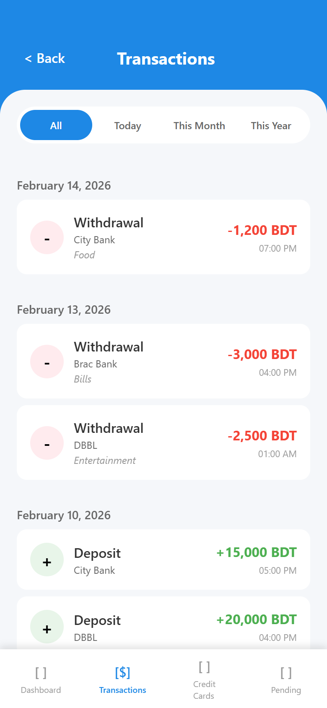
Each transaction entry shows:
Transactions are grouped by date with the most recent shown first.
Use the filter tabs at the top of the screen to narrow down your view:
| Filter | Shows |
|---|---|
| All | Every transaction ever recorded |
| Today | Transactions from today only |
| This Month | Transactions from the current month |
| This Year | Transactions from the current year |
Pull down on the Transactions screen to refresh and load the latest transactions.
Every transaction card has visible "Edit" and "Remove" buttons at the bottom. You can modify any transaction's details after it has been recorded.
YYYY-MM-DD format (e.g., 2026-02-15). The original time of the transaction is preserved.Made a deposit by mistake instead of a withdrawal? Use the Type toggle in the Edit modal to switch it without having to delete and re-create the transaction.
Editing a transaction will immediately update your account balances and transaction summaries. The change is reflected everywhere in the app, including the Dashboard totals.
You can permanently delete any transaction that was recorded incorrectly or is no longer needed.
Removing a transaction is permanent and cannot be undone. The deletion will immediately affect your account balance and all summary calculations. Double-check before confirming.
The Credit Cards screen helps you keep track of all your credit card bills, payment history, and expenses made on each card. Navigate to this screen by tapping the "Credit Cards" tab in the bottom navigation bar.
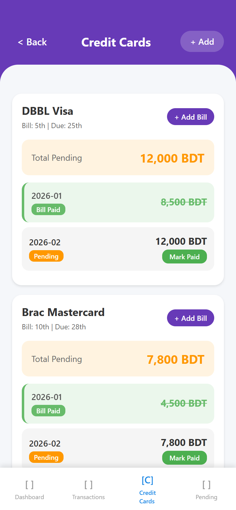
The screen is organized as follows:
Each credit card displays:
Bills have three possible statuses:
| Status | Color | Meaning |
|---|---|---|
| Paid | Green | The bill has been paid. Moved to Payment History section. |
| Pending | Orange | The bill is due but hasn't been paid yet. A "Mark Paid" button is available. |
| Overdue | Red | The payment date has passed and the bill is still unpaid. |
Active bills (Pending and Overdue) are shown prominently at the top of each card. To mark a bill as paid, tap the "Mark Paid" button next to the bill.
Paid bills are separated from active bills into a collapsible "Payment History" section. This keeps the card view clean while still providing access to your bill payment records.
Each credit card now shows a collapsible "Transactions (N)" section listing all expenses recorded against that card from the Cost screen (see Section 5.2).
Use the Transactions section to review what you've spent on each credit card. This helps you understand your CC spending before your bill statement arrives.
Add your credit card bills as soon as you receive your statement. This helps you track payment deadlines and avoid overdue fees. The app will automatically notify you when bills are approaching their due date.
The Pending Items screen helps you track upcoming payments, loans, and any other financial obligations. Navigate here by tapping the "Pending" tab in the bottom navigation bar.
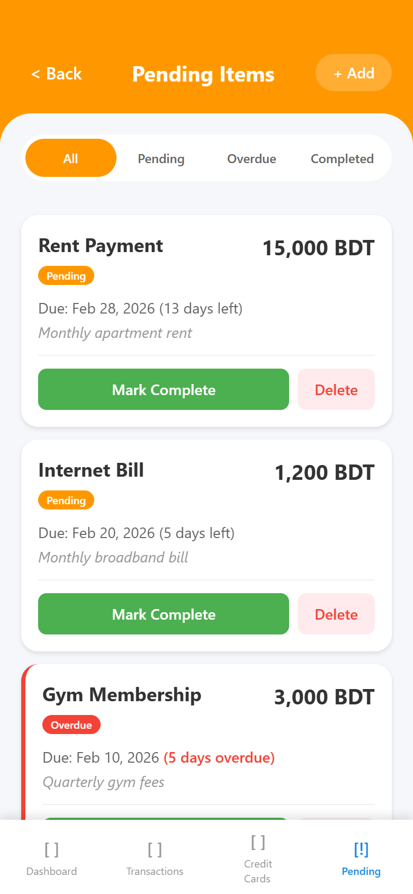
Each pending item shows:
Filter pending items using the tabs at the top:
| Filter | Shows |
|---|---|
| All | All pending items regardless of status |
| Pending | Only items that are still pending |
| Overdue | Only items past their due date |
| Completed | Only items marked as complete |
You can edit any pending or overdue item to update its details.
Use the Edit option to update the due date or amount if your payment terms change. When editing, the date picker allows selecting past dates so you can correct an existing item's due date without restrictions.
The Edit option is also available on the Dashboard in the "Pending Payments" section for quick access. Completed items cannot be edited.
Each pending item has action buttons to manage its status:
Items that pass their due date are automatically marked as "Overdue" and highlighted with a red border. Keep track of overdue items to avoid financial penalties.
Access your profile by tapping on your profile avatar (the circle with your initials) in the top-left corner of the Dashboard.
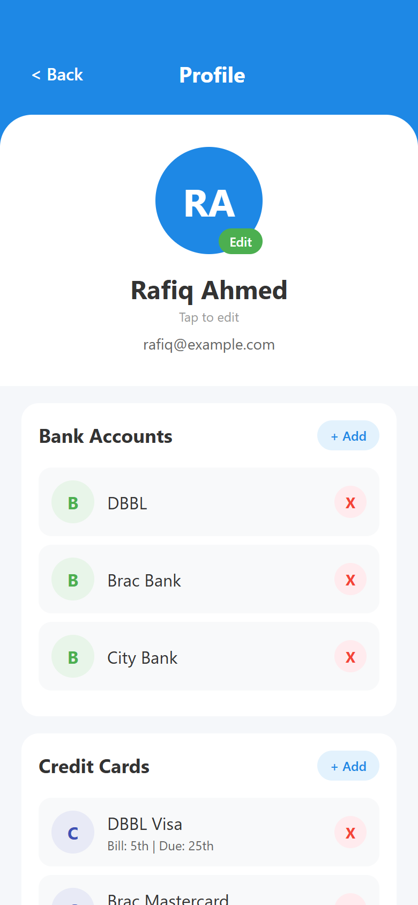
From the Profile screen, you can:
The Profile screen also lets you manage your bank accounts and credit cards:
Deleting a bank account will permanently remove all transactions associated with that account. This action cannot be undone. Deleting a credit card will also remove all its bill records and any expenses recorded against that card.
At the bottom of the Profile screen, you'll find the Data Security information section. Your financial data is stored entirely on your device using local storage. No data is sent to external servers, ensuring complete privacy and security of your financial information.
Since all data is stored locally, uninstalling the app will permanently delete all your financial records. Consider keeping a backup of important data.
To log out, tap the red "Logout" button at the bottom of the Profile screen, or the arrow icon in the top-right corner of the Dashboard. A confirmation dialog will appear before you are logged out.
The app uses a combination of bottom tab navigation and screen-to-screen navigation:
The bottom of the screen features four main tabs that are always accessible:
| Tab | Icon | Screen |
|---|---|---|
| Dashboard | [=] | Main dashboard with balance overview and quick actions |
| Transactions | [$] | Complete transaction history with filters |
| Credit Cards | [C] | Credit card management and bill tracking |
| Pending | [!] | Pending payments and obligations |
| From | Action | Goes To |
|---|---|---|
| Login | Tap "Sign Up" | Sign Up (Step 1) |
| Login | Tap "Forgot Password?" | Reset Password |
| Login | Tap "Sign In" | Dashboard |
| Dashboard | Tap profile avatar | Profile |
| Dashboard | Tap "+ Deposit" | Deposit Screen |
| Dashboard | Tap "- Cost" | Withdrawal Screen |
| Dashboard | Tap notification bell | Notifications (modal) |
| Any Screen | Tap "< Back" | Previous screen |
The active tab in the bottom navigation bar is highlighted in blue. You can switch between the four main sections at any time by tapping the corresponding tab.
If you encounter any issues or have questions about the app, please contact the app administrator or refer to this manual for guidance.
Personal Finance Manager © 2026. All rights reserved.